11号道路、地鼠洞穴、2号道路、深灰市、深灰道馆
通关后
11号道路

11号道路是一条草地小路，位于12号道路和西边的枯叶市之间。
| 训练家 | 宝可梦 | 奖金 |
|---|---|---|
| Psychic Herman | 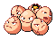 蛋蛋 Lv.39蛋蛋 Lv.39 | ₽1248 |
| 短裤小子 Jason | 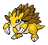 穿山王 Lv.42 | ₽672 |
| 短裤小子 Owen | ₽704 | |
| Psychic Fidel | ₽1376 |
| 宝可梦 | 版本 | 方式 | 等级 | 出现率 |
|---|---|---|---|---|
| 心金 / 魂银 | 草丛 | Lv.15 | 30% | |
| 心金 / 魂银 | 草丛 | Lv.15 | 20% | |
| 心金 / 魂银 | 草丛 | Lv.14, 16 | 40% | |
| 心金 / 魂银 | 草丛 | Lv.16 | 10% | |
| 头锤（A 组树） | ||||
| 心金 / 魂银 | 头锤 | Lv.13-14 | 50% | |
| 心金 / 魂银 | 头锤 | Lv.13-14 | 30% | |
| 心金 / 魂银 | 头锤 | Lv.13-14 | 20% | |
| 头锤（B 组树） | ||||
| 心金 / 魂银 | 头锤 | Lv.15-16 | 80% | |
| 心金 / 魂银 | 头锤 | Lv.15-16 | 20% | |
| 特殊 | ||||
| 心金 / 魂银 | 丰缘音乐 | Lv.14-15 | 20% | |
| 心金 / 魂银 | 丰缘音乐 | Lv.15 | 20% | |
| 心金 / 魂银 | 神奥音乐 | Lv.14-15 | 40% | |
| 道具 | 版本 | 位置 / 获得方法 |
|---|---|---|
| 招式学习器86（打草结） | 心金 / 魂银 | 道路东北角 |
| 心金 / 魂银 | 道路中间的空地上，树上（每天一次） | |
| 心金 / 魂银 | 中北部区域，穿过高草丛的小路尽头，两道栅栏之间（隐藏道具） |
↓ 下一站：枯叶市
枯叶市
路障
野生的卡比兽还睡在枯叶市东边，挡住了往返11号道路的路，刚好也挡住了地鼠洞穴的西边入口。想叫醒它，先把宝可装置的收音机调到圆盘中间偏上的位置，然后调查卡比兽，把收音机放在它身边。宝可梦之笛的音乐会把它从睡梦中吵醒，它会怒气冲冲地发起攻击！
| 宝可梦 | 详情 |
|---|---|
| 卡比兽 Lv.50 · 一般 | 特性：免疫 携带： 招式：挡路、滚动、咬碎、终极冲击 |
地鼠洞穴
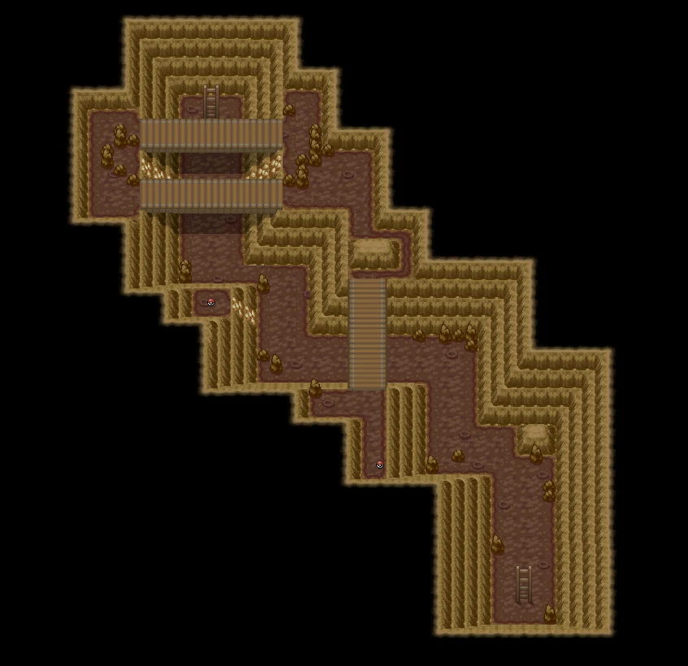
地鼠洞穴是一条几乎横贯整个地区的长隧道，连接枯叶市和2号道路东侧。顾名思义，这里原生的宝可梦只有地鼠和它的进化型三地鼠。浅红市的海滩被堵住了，这里是目前去关都西部的唯一通路。
| 宝可梦 | 版本 | 方式 | 等级 | 出现率 |
|---|---|---|---|---|
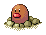 地鼠 | 心金 / 魂银 | 洞窟 | Lv.13, 15, 17, 19 | 90% |
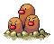 三地鼠 | 心金 / 魂银 | 洞窟 | Lv.19, 24, 29 | 10% |
| 特殊 | ||||
| 心金 / 魂银 | 交换 | 与换出去的宝可梦同等级 | 1 只，星期一、星期六（仅在宝可装置登记了小刚的电话之后） | |
| 心金 / 魂银 | 丰缘音乐 | Lv.19 | 20% | |
| 心金 / 魂银 | 丰缘音乐 | Lv.15, 17 | 20% | |
| 心金 / 魂银 | 神奥音乐 | Lv.19 | 20% | |
| 心金 / 魂银 | 神奥音乐 | Lv.15, 17 | 20% | |
| 道具 | 版本 | 位置 / 获得方法 |
|---|---|---|
| 心金 / 魂银 | 地面层，南北向那座桥的东边，岩石上（隐藏道具） | |
| 之后再来 | ||
| 心金 / 魂银 | 上层，西北边的死胡同（隐藏道具，需要攀岩） | |
| 心金 / 魂银 | 上层，北边两座桥和南边那座桥之间的小凹处（需要攀岩） | |
| 心金 / 魂银 | 上层，南边那座桥的南边（需要攀岩） | |
| 心金 / 魂银 | 交换得到的独角犀牛 Hornlette 携带 | |
↓ 下一站：2号道路
2号道路

2号道路连接常青市和深灰市。道路西侧大部分被一片叫常青森林的树林迷宫占据。
| 训练家 | 宝可梦 | 奖金 |
|---|---|---|
| 捕虫少年 Ed | ₽688 | |
| 捕虫少年 Doug | 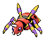 阿利多斯 Lv.37 | ₽592 |
| 捕虫少年 Rob | ₽624 |
| 宝可梦 | 版本 | 方式 | 等级 | 出现率 |
|---|---|---|---|---|
| 心金 | 草丛 | Lv.3-4 | 早 31% · 日 31% · 夜 0% | |
| 心金 | 草丛 | Lv.5 | 早 20% · 日 0% · 夜 0% | |
| 心金 | 草丛 | Lv.7-8 | 早 10% · 日 10% · 夜 0% | |
| 魂银 | 草丛 | Lv.4 | 早 1% · 日 1% · 夜 1% | |
| 魂银 | 草丛 | Lv.3 | 早 10% · 日 30% · 夜 0% | |
| 魂银 | 草丛 | Lv.5 | 早 0% · 日 0% · 夜 10% | |
| 魂银 | 草丛 | Lv.5 | 早 20% · 日 20% · 夜 0% | |
| 魂银 | 草丛 | Lv.3 | 早 0% · 日 0% · 夜 10% | |
| 魂银 | 草丛 | Lv.7 | 早 0% · 日 0% · 夜 1% | |
| 魂银 | 草丛 | Lv.7 | 早 10% · 日 0% · 夜 0% | |
| 魂银 | 草丛 | Lv.10 | 早 0% · 日 0% · 夜 4% | |
| 心金 | 草丛 | Lv.3 | 早 30% · 日 0% · 夜 0% | |
| 心金 | 草丛 | Lv.3, 5 | 早 0% · 日 50% · 夜 0% | |
| 魂银 | 草丛 | Lv.3 | 早 20% · 日 0% · 夜 0% | |
| 魂银 | 草丛 | Lv.3, 7 | 早 0% · 日 40% · 夜 0% | |
| 心金 | 草丛 | Lv.7 | 早 5% · 日 0% · 夜 0% | |
| 心金 | 草丛 | Lv.7, 10 | 早 0% · 日 9% · 夜 0% | |
| 魂银 | 草丛 | Lv.7 | 早 0% · 日 5% · 夜 0% | |
| 心金 | 草丛 | Lv.3, 5 | 早 0% · 日 0% · 夜 50% | |
| 魂银 | 草丛 | Lv.3, 5 | 早 0% · 日 0% · 夜 60% | |
| 心金 | 草丛 | Lv.7, 10 | 早 0% · 日 0% · 夜 14% | |
| 魂银 | 草丛 | Lv.7 | 早 0% · 日 0% · 夜 14% | |
| 魂银 | 草丛 | Lv.3 | 早 30% · 日 0% · 夜 0% | |
| 魂银 | 草丛 | Lv.10 | 早 0% · 日 4% · 夜 0% | |
| 魂银 | 草丛 | Lv.7, 10 | 早 9% · 日 0% · 夜 0% | |
| 心金 | 草丛 | Lv.10 | 早 4% · 日 0% · 夜 0% | |
| 心金 | 草丛 | Lv.3-4 | 早 0% · 日 0% · 夜 31% | |
| 阿利多斯 | 心金 | 草丛 | Lv.7 | 早 0% · 日 0% · 夜 5% |
| 头锤（A 组树） | ||||
| 心金 / 魂银 | 头锤 | Lv.3-4 | 50% | |
| 心金 / 魂银 | 头锤 | Lv.3-4 | 30% | |
| 心金 / 魂银 | 头锤 | Lv.3-4 | 20% | |
| 头锤（B 组树） | ||||
| 心金 / 魂银 | 头锤 | Lv.5-7 | 50% | |
| 魂银 | 头锤 | Lv.5-7 | 30% | |
| 心金 | 头锤 | Lv.5-7 | 30% | |
| 心金 / 魂银 | 头锤 | Lv.5-7 | 20% | |
| 特殊 | ||||
| 心金 / 魂银 | 丰缘音乐 | Lv.3 | 20% | |
| 心金 / 魂银 | 丰缘音乐 | Lv.5 | 20% | |
| 心金 / 魂银 | 神奥音乐 | Lv.3, 5 | 40% | |
| 心金 | 草丛 | Lv.3-4 | 早 31% · 日 31% · 夜 0% | |
| 心金 | 草丛 | Lv.5 | 早 20% · 日 20% · 夜 0% | |
| 心金 | 草丛 | Lv.7-8 | 早 10% · 日 0% · 夜 0% | |
| 魂银 | 草丛 | Lv.3-4 | 早 11% · 日 31% · 夜 0% | |
| 魂银 | 草丛 | Lv.4-5 | 早 0% · 日 0% · 夜 11% | |
| 魂银 | 草丛 | Lv.5 | 早 20% · 日 20% · 夜 0% | |
| 魂银 | 草丛 | Lv.3 | 早 0% · 日 0% · 夜 10% | |
| 魂银 | 草丛 | Lv.7 | 早 0% · 日 0% · 夜 1% | |
| 魂银 | 草丛 | Lv.7 | 早 10% · 日 0% · 夜 0% | |
| 魂银 | 草丛 | Lv.10 | 早 0% · 日 0% · 夜 4% | |
| 心金 | 草丛 | Lv.3 | 早 30% · 日 0% · 夜 0% | |
| 心金 | 草丛 | Lv.3, 7-8 | 早 0% · 日 40% · 夜 0% | |
| 魂银 | 草丛 | Lv.3 | 早 20% · 日 0% · 夜 0% | |
| 魂银 | 草丛 | Lv.3, 7 | 早 0% · 日 40% · 夜 0% | |
| 心金 | 草丛 | Lv.7 | 早 5% · 日 0% · 夜 0% | |
| 心金 | 草丛 | Lv.7, 10 | 早 0% · 日 9% · 夜 0% | |
| 魂银 | 草丛 | Lv.7 | 早 0% · 日 5% · 夜 0% | |
| 心金 | 草丛 | Lv.3-5 | 早 0% · 日 0% · 夜 50% | |
| 魂银 | 草丛 | Lv.3-5 | 早 0% · 日 0% · 夜 60% | |
| 心金 | 草丛 | Lv.7-8, 10 | 早 0% · 日 0% · 夜 14% | |
| 魂银 | 草丛 | Lv.7 | 早 0% · 日 0% · 夜 14% | |
| 魂银 | 草丛 | Lv.3 | 早 30% · 日 0% · 夜 0% | |
| 魂银 | 草丛 | Lv.10 | 早 0% · 日 4% · 夜 0% | |
| 魂银 | 草丛 | Lv.7-10 | 早 9% · 日 0% · 夜 0% | |
| 心金 | 草丛 | Lv.10 | 早 4% · 日 0% · 夜 0% | |
| 心金 | 草丛 | Lv.3-4 | 早 0% · 日 0% · 夜 31% | |
| 阿利多斯 | 心金 | 草丛 | Lv.7 | 早 0% · 日 0% · 夜 5% |
| 头锤（A 组树） | ||||
| 心金 / 魂银 | 头锤 | Lv.3-4 | 50% | |
| 心金 / 魂银 | 头锤 | Lv.3-4 | 30% | |
| 心金 / 魂银 | 头锤 | Lv.3-4 | 20% | |
| 头锤（B 组树） | ||||
| 心金 / 魂银 | 头锤 | Lv.5-7 | 50% | |
| 魂银 | 头锤 | Lv.5-7 | 30% | |
| 心金 | 头锤 | Lv.5-7 | 30% | |
| 心金 / 魂银 | 头锤 | Lv.5-7 | 20% | |
| 特殊 | ||||
| 心金 / 魂银 | 丰缘音乐 | Lv.3 | 20% | |
| 心金 / 魂银 | 丰缘音乐 | Lv.5 | 20% | |
| 心金 / 魂银 | 神奥音乐 | Lv.3, 5 | 40% | |
| 道具 | 版本 | 位置 / 获得方法 |
|---|---|---|
| 东侧 | ||
| 心金 / 魂银 | 地鼠洞穴入口东北边 | |
| 心金 / 魂银 | 地鼠洞穴南边，树上（每天一次） | |
| 心金 / 魂银 | 房子里的男人给予 | |
| 心金 / 魂银 | 关口里，大木博士的一位助手给予 | |
| 心金 / 魂银 | 东南区域，从关口数第二对和第三对台阶之间 | |
| 西侧 | ||
| 随机树果 | 心金 / 魂银 | 登记捕虫少年 Doug 的电话后，他有时会送 |
| 随机树果 | 心金 / 魂银 | 登记捕虫少年 Rob 的电话后，他有时会送 |
友善的面孔
去地鼠洞穴附近的房子，和里面的男人说话。他住在荒郊野外，很久没有客人来了。有人陪他很高兴，送你一颗金珠表示感谢。
常青森林
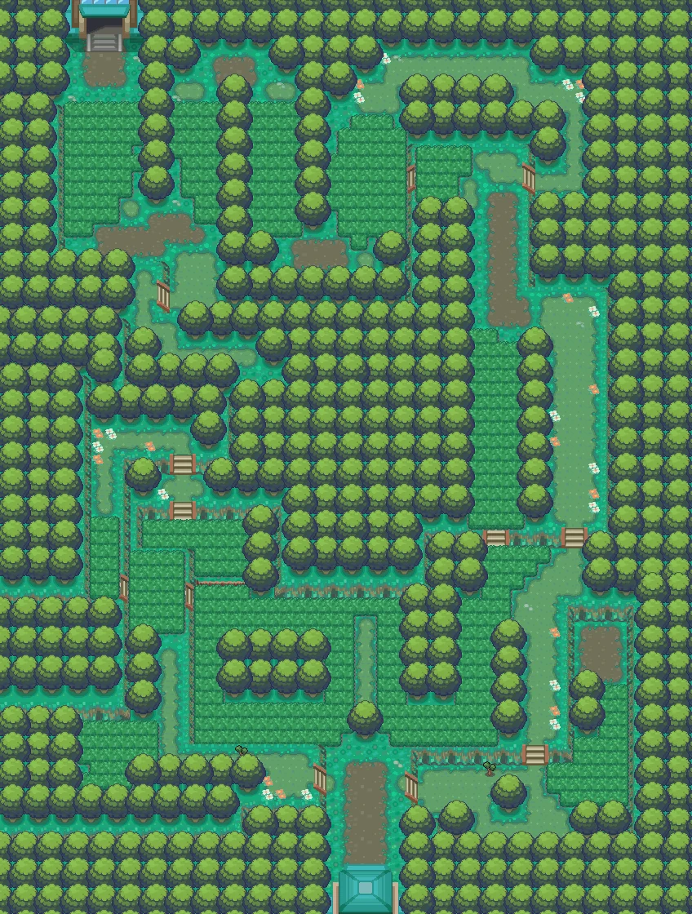
常青森林是2号道路上一大片树林。这里是天然的迷宫，很容易迷路。
| 训练家 | 宝可梦 | 奖金 |
|---|---|---|
| 捕虫少年 Abner | ₽704 | |
| 捕虫少年 Ellis | ₽736 | |
| 捕虫少年 Stacey | ₽960 | |
| 捕虫少年 Dion | 阿利多斯 Lv.50 | ₽800 |
| 捕虫少年 Dane | ₽768 |
| 宝可梦 | 版本 | 方式 | 等级 | 出现率 |
|---|---|---|---|---|
| 心金 | 草丛 | Lv.3 | 早 40% · 日 40% · 夜 0% | |
| 魂银 | 草丛 | Lv.3 | 早 40% · 日 40% · 夜 0% | |
| 心金 | 草丛 | Lv.3, 5 | 早 30% · 日 30% · 夜 0% | |
| 魂银 | 草丛 | Lv.3, 5 | 早 30% · 日 30% · 夜 0% | |
| 心金 / 魂银 | 草丛 | Lv.3 | 早 10% · 日 0% · 夜 0% | |
| 心金 / 魂银 | 草丛 | Lv.3, 7 | 早 0% · 日 15% · 夜 0% | |
| 心金 | 草丛 | Lv.7 | 早 10% · 日 0% · 夜 0% | |
| 魂银 | 草丛 | Lv.7 | 早 10% · 日 0% · 夜 0% | |
| 心金 / 魂银 | 草丛 | Lv.4, 7 | 早 6% · 日 6% · 夜 0% | |
| 心金 / 魂银 | 草丛 | Lv.4 | 早 0% · 日 0% · 夜 5% | |
| 心金 / 魂银 | 草丛 | Lv.7 | 早 4% · 日 9% · 夜 0% | |
| 心金 / 魂银 | 草丛 | Lv.3, 5 | 早 0% · 日 0% · 夜 80% | |
| 心金 / 魂银 | 草丛 | Lv.7 | 早 0% · 日 0% · 夜 15% | |
| 头锤（A 组树） | ||||
| 心金 / 魂银 | 头锤 | Lv.3-4 | 50% | |
| 心金 | 头锤 | Lv.3-4 | 30% | |
| 魂银 | 头锤 | Lv.3-4 | 30% | |
| 魂银 | 头锤 | Lv.3-4 | 10% | |
| 心金 | 头锤 | Lv.3-4 | 10% | |
| 魂银 | 头锤 | Lv.3-4 | 10% | |
| 心金 | 头锤 | Lv.3-4 | 10% | |
| 头锤（B 组树） | ||||
| 心金 / 魂银 | 头锤 | Lv.5-7 | 50% | |
| 心金 | 头锤 | Lv.5-7 | 30% | |
| 魂银 | 头锤 | Lv.5-7 | 30% | |
| 魂银 | 头锤 | Lv.5-7 | 10% | |
| 阿利多斯 | 心金 | 头锤 | Lv.5-7 | 10% |
| 魂银 | 头锤 | Lv.5-7 | 10% | |
| 心金 | 头锤 | Lv.5-7 | 10% | |
| 大量出现 | ||||
| 心金 / 魂银 | 大量出现 | Lv.3, 5 | 40% | |
| 特殊 | ||||
| 呆火驼 | 心金 / 魂银 | 丰缘音乐 | Lv.5 | 20% |
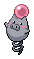 跳跳猪 | 心金 / 魂银 | 丰缘音乐 | Lv.3 | 20% |
| 心金 / 魂银 | 神奥音乐 | Lv.3 | 20% | |
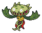 尖牙笼 | 心金 / 魂银 | 神奥音乐 | Lv.5 | 20% |
| 道具 | 版本 | 位置 / 获得方法 |
|---|---|---|
| 心金 / 魂银 | 最西南边的那片高草丛（隐藏道具） | |
| 心金 / 魂银 | 森林西南部，中西部区域最北边那处橙色花丛（隐藏道具） 中东部区域，道路左边的一处橙色花丛（隐藏道具） | |
| 心金 / 魂银 | 森林西南部，两道楼梯之间，那棵孤树的东边 | |
| 心金 / 魂银 | 南边入口附近那棵孤树的北边，山坡上（隐藏道具） 东南区域，泥地北边的山坡上（隐藏道具） 东北区域，森林最东北角的一处橙色花丛（隐藏道具） | |
| 招式学习器77（自我暗示） | 心金 / 魂银 | 东南区域，泥地上 |
| 心金 / 魂银 | 东北区域，泥地上 | |
| 心金 / 魂银 | 西北区域，北边出口东偏南的泥地上 | |
| 心金 / 魂银 | 北边出口东南边的死胡同（隐藏道具） |
从南边入口沿小路往西北，在一棵孤树旁找到叶之石。跳下台阶回到入口，这次往东走。经过捕虫少年 Dane，在附近的泥地上拿招式学习器77（自我暗示）。转向北，在森林东侧和捕虫少年 Dion 对战。穿过高草丛继续往北，或者沿小路走，和捕虫少年 Stacey 对战。西北边的大片泥地上有蓝色玻璃哨。再往北，路分成两条；走东边的楼梯能到森林东北角，捕虫少年 Ellis 在那里绕圈跑。往西在树之间曲折前进，在最北边的泥地上找到要害攻击。去西南边的死胡同拿全复药，然后继续往西北。经过捕虫少年 Abner，就到森林的北边了。走出关口回到2号道路，继续往北去深灰市。
↓ 下一站：深灰市
深灰市
深灰市是一座宁静的城市，坐落在北边的山间，位于2号道路和3号道路之间。深灰科学博物馆和深灰道馆都在这里。
| 宝可梦 | 版本 | 方式 | 等级 | 出现率 |
|---|---|---|---|---|
| 头锤（A 组树） | ||||
| 心金 / 魂银 | 头锤 | Lv.3-5 | 50% | |
| 心金 / 魂银 | 头锤 | Lv.3-5 | 30% | |
| 心金 / 魂银 | 头锤 | Lv.3-5 | 20% | |
| 头锤（B 组树） | ||||
| 心金 / 魂银 | 头锤 | Lv.7-9 | 80% | |
| 心金 / 魂银 | 头锤 | Lv.7-9 | 20% | |
| 头锤：栅栏边最上面的两棵树，从2号道路过去 | ||||
| 心金 / 魂银 | 头锤 | Lv.5-9 | 65% | |
| 心金 / 魂银 | 头锤 | Lv.5-9 | 30% | |
| 心金 / 魂银 | 头锤 | Lv.8-12 | 5% | |
| 赠送的宝可梦 | ||||
| 心金 / 魂银 | 贝壳化石 | Lv.20 | 化石复活 | |
| 化石盔 | 心金 / 魂银 | 甲壳化石 | Lv.20 | 化石复活 |
| 心金 / 魂银 | 秘密琥珀 | Lv.20 | 化石复活 | |
| 触手百合 | 心金 / 魂银 | 根状化石 | Lv.20 | 化石复活 |
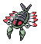 太古羽虫 | 心金 / 魂银 | 爪子化石 | Lv.20 | 化石复活 |
| 头盖龙 | 心金 / 魂银 | 头盖化石 | Lv.20 | 化石复活 |
| 盾甲龙 | 心金 / 魂银 | 盾甲化石 | Lv.20 | 化石复活 |
| 特殊 | ||||
| 心金 / 魂银 | 交换 | 与换出去的宝可梦同等级 | 1 只 | |
| 道具 | 版本 | 位置 / 获得方法 |
|---|---|---|
| 心金 / 魂银 | 南边入口附近，西边栅栏后面，从2号道路过去（隐藏道具） | |
| 心金 / 魂银 | 交换得到的天然鸟 Paul 携带 | |
| 心金 / 魂银 | 花园东侧（隐藏道具） | |
| 蓝球果 | 心金 / 魂银 | 东北边的小山上，两棵树中西边那棵（每天一次） |
| 心金 / 魂银 | 东北边的小山上，两棵树中东边那棵（每天一次） | |
| 心金 / 魂银 | 西北区域的死胡同（需要碎岩） | |
| 心金 / 魂银 | 深灰道馆西南边，岩石上（隐藏道具） | |
| 招式学习器80（岩崩） | 心金 / 魂银 | 打败道馆馆主小刚后由他给予 |
| 心金 | 去3号道路的东边出口附近，一位老爷爷给予 | |
| 魂银 | 去3号道路的东边出口附近，一位老爷爷给予 |
交换时间
去宝可梦中心，会找到一个想交换宝可梦的男人。他愿意用自己的天然鸟换一只鬼斯通。鬼斯通在8号道路能找到，它进化前的鬼斯在城都的喇叭芽之塔和铃铛塔也有。
深灰科学博物馆
深灰科学博物馆在城市北边，收藏各种文物和展品，以关都地区的化石和其他标本为主。接待员告诉来访者，因为比较大的标本都借给其他博物馆了，现在免费参观。
入口附近有一位工作人员（怪人）。他说以前有几颗陨石落在深灰市附近。博物馆很想把它们拿来展出，但据说陨石会发出奇怪的能量，没法搬走。
化石复活
在旁边的小房间里，另一个怪人负责化石复活。和他说话，交给他已知七种化石中的一种进行复活。复活需要一点时间，先离开建筑，过一会儿再回来领取古代宝可梦。
贝壳化石 → 菊石兽
甲壳化石 → 化石盔
秘密琥珀 → 化石翼龙
根状化石 → 触手百合
爪子化石 → 太古羽虫
头盖化石 → 头盖龙
盾甲化石 → 盾甲龙
深灰道馆

| 深灰市宝可梦道馆 馆主：小刚 坚如磐石的宝可梦训练家 |
深灰道馆专精岩石属性宝可梦。岩石属性招式对虫、火、飞行、冰属性效果绝佳，而岩石属性宝可梦怕格斗、草、地面、钢、水属性招式。
道馆里是一座岩石庭园，到馆主之前只有两场可以不打的训练家对战。
因为都是双属性，小刚的五只宝可梦被草属性攻击打都会受巨大伤害。除此之外，水属性招式对他的隆隆石、独角犀牛和大岩蛇有效。小刚空闲时喜欢去月见山挖化石，得到了多刺菊石兽和镰刀盔这两只史前宝可梦。它们也都怕电属性攻击。
| 训练家 | 宝可梦 | 奖金 |
|---|---|---|
| 野营男 Jerry | ₽800 | |
| 登山男 Edwin | 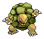 隆隆岩 Lv.50 | ₽1600 |
| 宝可梦 | 详情 |
|---|---|
Lv.51 · 岩石 / 地面 | 特性：结实 招式：地震、变圆、岩崩、滚动 |
Lv.51 · 地面 / 岩石 | 特性：坚硬脑袋 招式：地震、鬼面、沙暴、角钻 |
| 多刺菊石兽 Lv.53 · 岩石 / 水 | 特性：悠游自如 招式：尖刺加农炮、原始之力、盐水、守住 |
Lv.54 · 岩石 / 地面 | 特性：结实 携带： 招式：岩崩、铁尾、沙暴、刺耳声 |
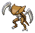 镰刀盔Lv.52 · 岩石 / 水 | 特性：悠游自如 招式：岩崩、水流喷射、挺住、终极吸取 |
对战结束后，小刚会授予你灰色徽章。他还会送你招式学习器80（岩崩）作为奖品。
第二根羽毛
城镇东边的小山上站着一位老爷爷。和他说话，他会回忆年轻时在城都修行的日子。你让他想起了年轻时的自己，他很乐意把多年前在那里发现的宝物送给你：银色之羽（心金）/彩虹之羽（魂银）。有了这根闪闪发光的羽毛，就能找到城都两只传说之鸟中的第二只。
- 捕捉第二只传说之鸟的方法，请看第 14 节的「漩涡群岛」（心金）/「铃铛塔」（魂银）部分。
↓ 下一页：3号道路、月见山、4号道路
原文：Bulbapedia《Walkthrough:Pokémon HeartGold and SoulSilver/Part 24》（修订版本 4655615，），作者见原文页面历史。本页由 Eli 的杂货间翻译为中文，并有改动（重新排版、精简部分图注）。原文与译文均以 CC BY-NC-SA 2.5 授权。配图来自原站，版权归原作者与游戏厂商；地图截图来自 Bulbagarden Archives，游戏画面版权归 Nintendo / Game Freak / The Pokémon Company。